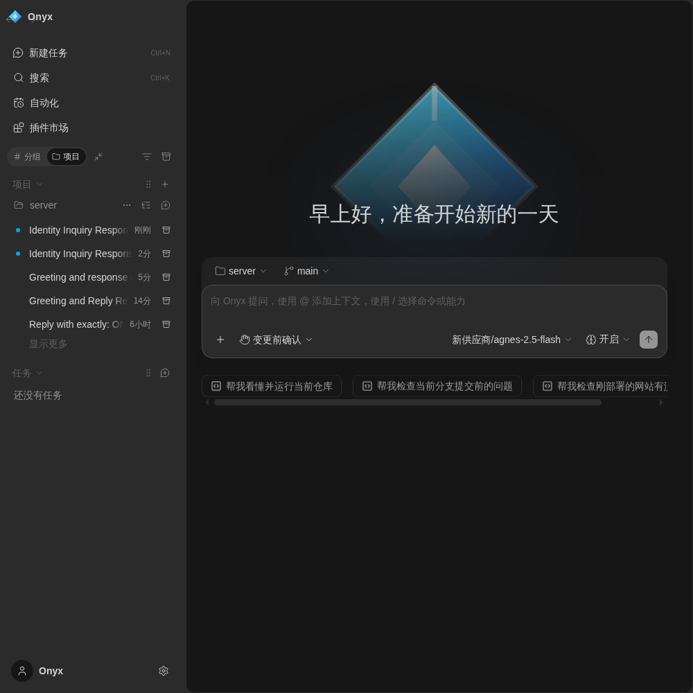
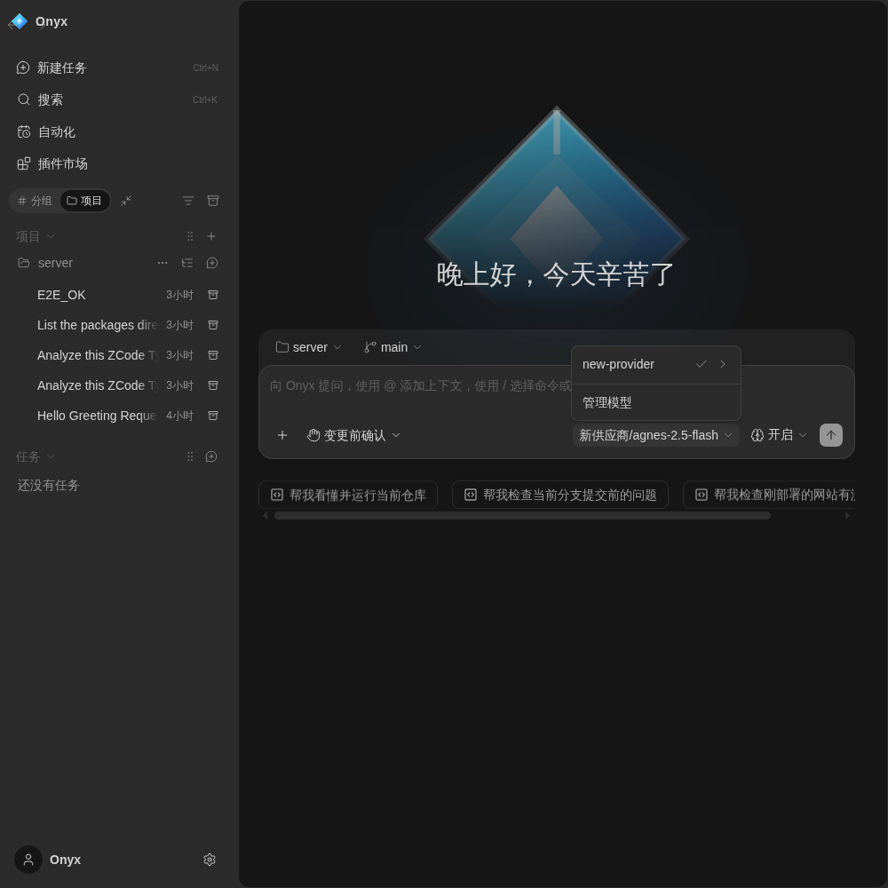
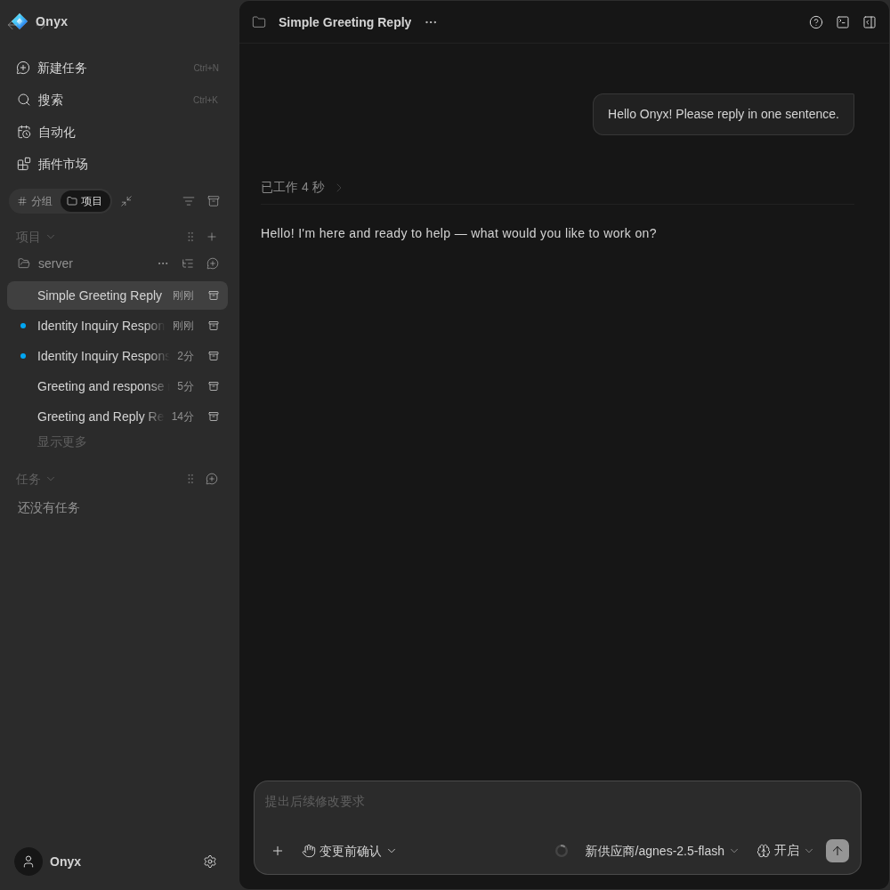

上游的账号、套餐、登录墙、官方服务器全部砍掉，留下真正属于你的工作台
任意 OpenAI 兼容网关即插即用，地址与密钥完全由你填写，不内置任何厂商账号。
多网关故障自动切换、并发排队、推理模型正文恒空自动回退——云知声 u2-flash 等实测 7/7。
Ollama / llama.cpp / 任意 OpenAI 兼容 /v1 本地端点离线即用，断网也能继续干活。
全部能力本地运行，不上传、不遥测、不依赖任何官方服务器；你自己的电脑就是服务器。
SSH / WSL / Docker 连接，断线自动重连、增量同步，远端机器资源一目了然。
定时、文件变更、Webhook、Git 事件触发；运行日志与跨工作区运行监控全部本机可查。
分层记忆、全文检索、技能自动触发；技能随本地市场一起分发，断网可用。
插件 SDK + 本地市场 + 运行时，自建市场安装的插件自动贡献技能，无需额外导入。
克隆 → 装依赖 → 配 Key → 开干（任选一个仓库源）
git clone https://gitcode.com/badhope/onyx.git
pnpm install → pnpm dev:web
设置 → 新供应商 → 填入网关地址与 Key（本地端点填 Ollama 等地址即可）
对话 / 远程工作区 / 自动化调度 / 插件市场，全部本机可用